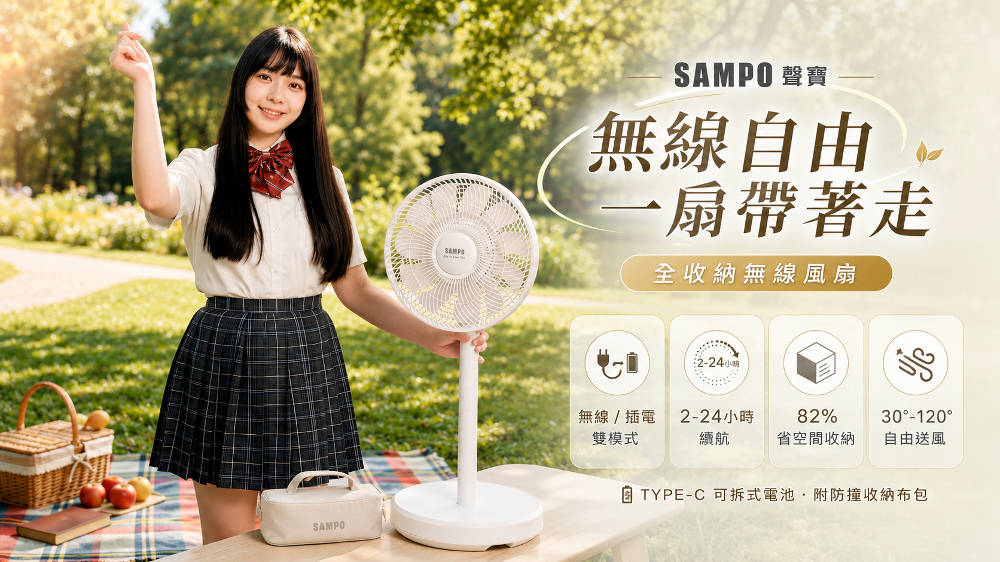
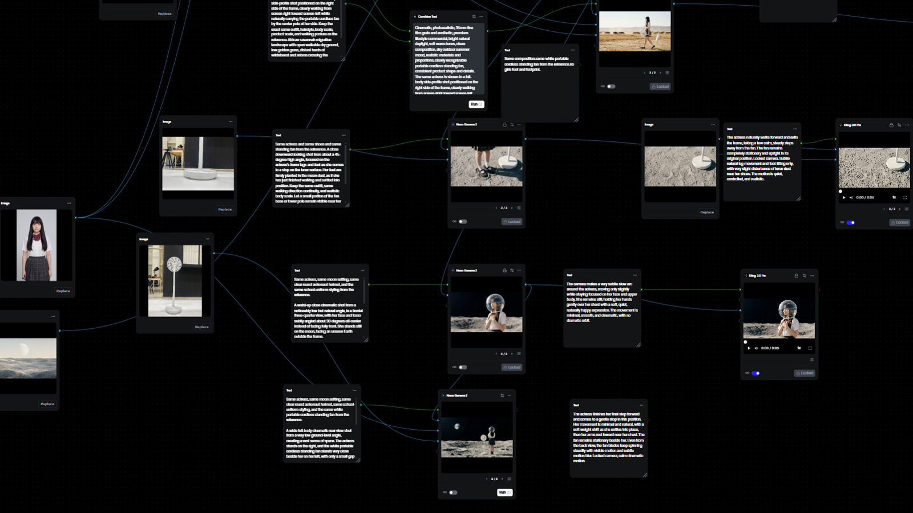
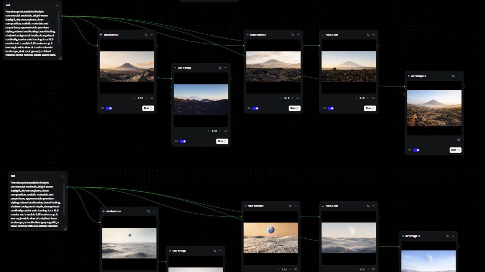
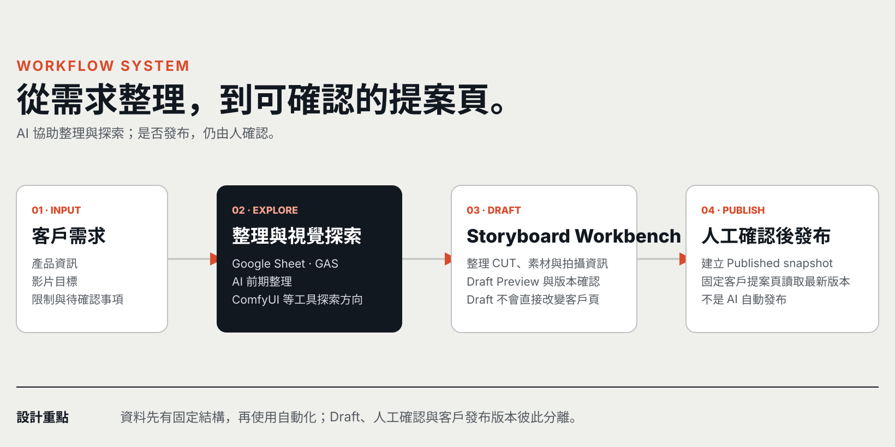
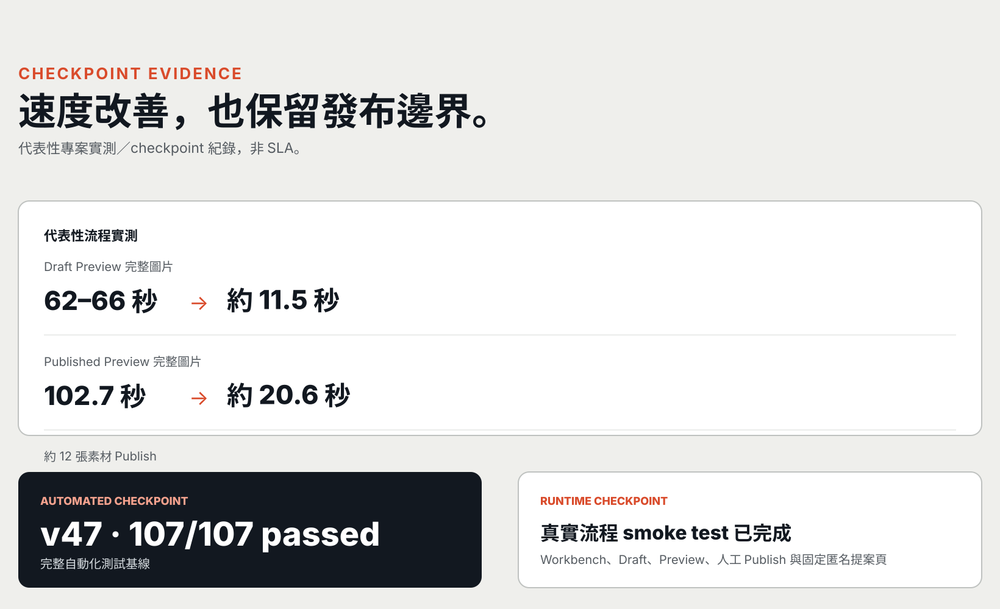

品牌內容企劃／Creative Producer／創意專案管理



近年每年約 15–30 案
商業內容完整交付
客戶溝通・外包管理・修改驗收
WORK
依照要解決的問題，找到對應案例。
FLAGSHIP 01
完整商業影音專案
三款氣炸烤箱商業影音
已交付｜案例影像整理中
案例影像整理中
三款相似產品，需要以不同溝通重點與影像節奏建立差異。
- 關鍵執行
- 控制燈光反射、料理時序與多人拍攝協作。
- 我的角色
- 企劃、腳本、提案、導演、客戶溝通與團隊管理。
FLAGSHIP 02 · WORKFLOW
已投入實際工作的流程系統
分鏡提案工作台
把分散製作資訊收斂成可確認、可交付的提案流程。
02 · 流程／方法
整理需求與視覺方向，確認後再發布。

03 · INTERNAL WORKBENCH
素材、CUT 與拍攝資訊在同一處整理。


04 · 客戶提案成果
內部資料整理後，輸出成固定提案頁。
05 · 效能與可靠性證據
預覽、發布與測試都有可核對紀錄。

SELECTED CASES
不同限制，使用不同的內容解法。
CASE 03 · PUBLIC ISSUE
正式委託之概念提案｜未進入製作階段
警政署防詐 AI 創意提案
把防詐資訊轉成可討論的敘事與視覺概念。
概念提案
- 提案方式
- 整理訊息層級、敘事概念與 AI 視覺方向。
- 我的角色
- 議題轉譯、敘事概念、創意提案與 AI 視覺開發。
CASE 04 · BUDGET CONSTRAINT
正式客戶專案｜已交付
聲寶全收納無線風扇 AI 電商廣告
有限預算下，以 AI 生成與後期完成外景使用情境。
- 主要挑戰
- 維持商品、角色與場景的一致性。
- 我的角色
- 企劃、提案、生成與剪輯，由本人獨立完成。
PROCESS
把模糊需求，收斂成可以驗收的內容。
七個階段，從需求一路走到交付與改善。
-
01
需求釐清
釐清目標、限制與驗收條件。
-
02
企劃與腳本
把方向轉成腳本與畫面需求。
-
03
提案
收斂選項與確認執行方向。
-
04
資源與排程
安排人力、外包、素材與時程。
-
05
拍攝／製作
依確認方向完成拍攝與製作。
-
06
回饋與驗收
集中修改、版本與驗收結果。
-
07
流程改善
找出重複與易錯環節，持續改善。
ABOUT / EXPERIENCE
從內容與影像交付現場出發。
多年跨產業內容與影像實務，讓我熟悉商業需求、創意表達與製作限制。
我也把 AI 與自動化整理成可實際使用的工作方法。
- 01商業內容落地
- 企劃、腳本、提案、拍攝製作與驗收。
- 02跨角色協作
- 整理客戶、團隊與外包之間的資訊與時程。
- 03流程設計
- 把重複工作整理成團隊可使用的流程。
完整履歷可另外提供。
索取完整履歷
CONTACT
如果你需要能一起想，也能把內容做完的人，歡迎來聊。
職務邀請、內容專案或流程合作，歡迎來信。
- 職務／長期合作
- 內容企劃、Creative Producer
- 專案合作
- 影像製作、AI 流程改善